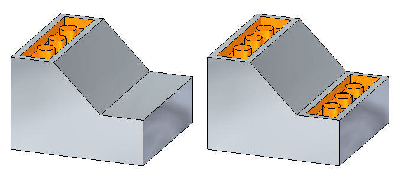
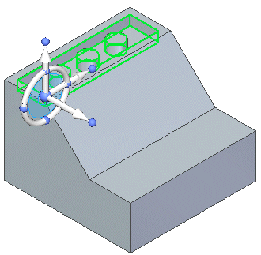
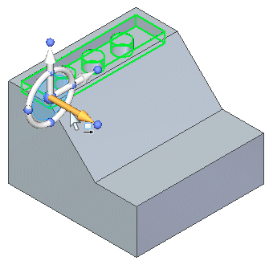
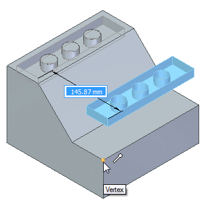
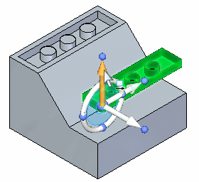
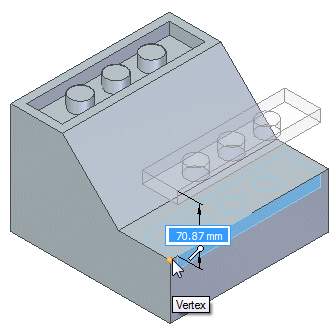
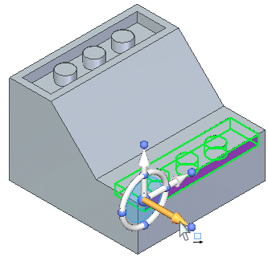
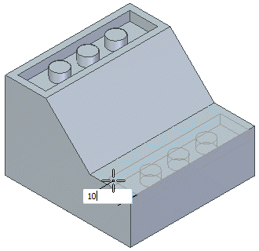
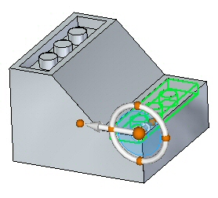
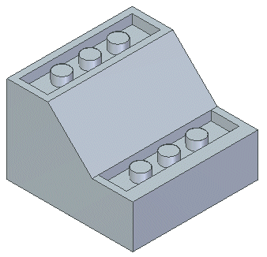

Activity: Copying and attaching a feature (method 1)
This activity guides you through the process of copying a cutout feature and then attaching the copied feature in a new location on the model.
Click here to download the activity file.

If you are using Internet Explorer and a video is not displaying in your training guide, click the Tools tab (or gear icon)→Compatibility View settings, and then clear the selection of Display intranet sites in Compatibility View.
Open copy_a.par.

Select the cutout feature by clicking Cutout1 in PathFinder.

How to use the Design Intent panel is presented in the help topic, Working with geometric relationships. At this time just suspend the Design Intent setting in the Design Intent panel while moving the cutout feature. This ensures no other faces in the model participate in the move.
On the Design Intent panel, uncheck the Design Intent (1) option.

On command bar, choose the Copy  option.
option.
Move the copied feature to the orange face.

To begin the move, click the axis shown. The move origin point is where the origin of the steering wheel resides.

Move the feature to the edge of the part using a keypoint. On command bar, click the Keypoints list and choose Endpoint .
Select the keypoint location shown.

Move the selected feature downward. Click the axis shown.

Select the keypoint.

Click the axis shown.

Move the cursor inward toward the part, type 10 in dynamic edit box, and press Enter.

The copied feature is in position but is detached from the model.
Right-click the part window and choose Attach.


In this activity, you learned how to copy a feature and then position the copied feature. There are other methods available to move the copied feature to a location other than what was shown in this activity.
Click the Close button in the upper-right corner of the activity window.